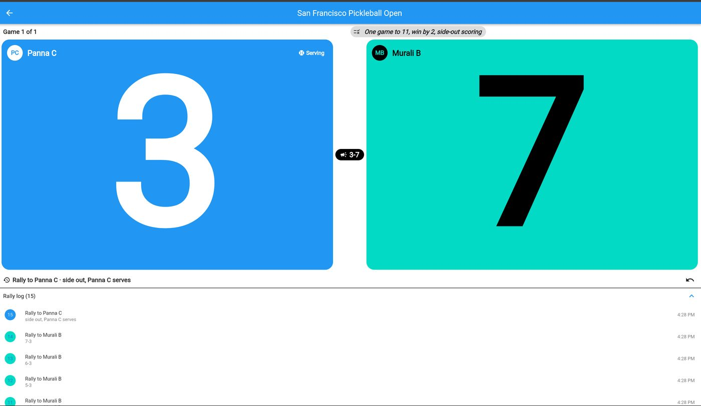
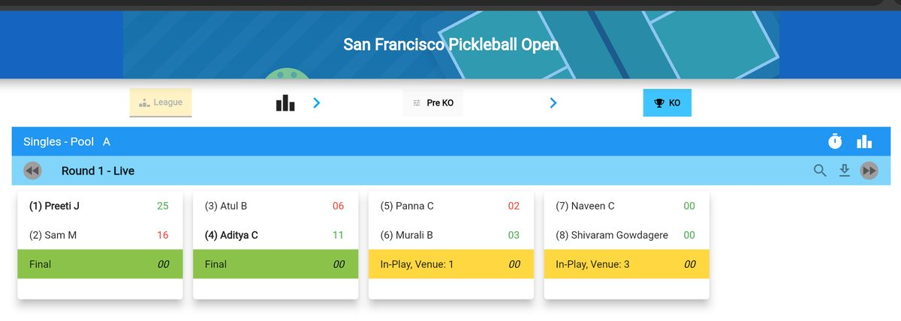
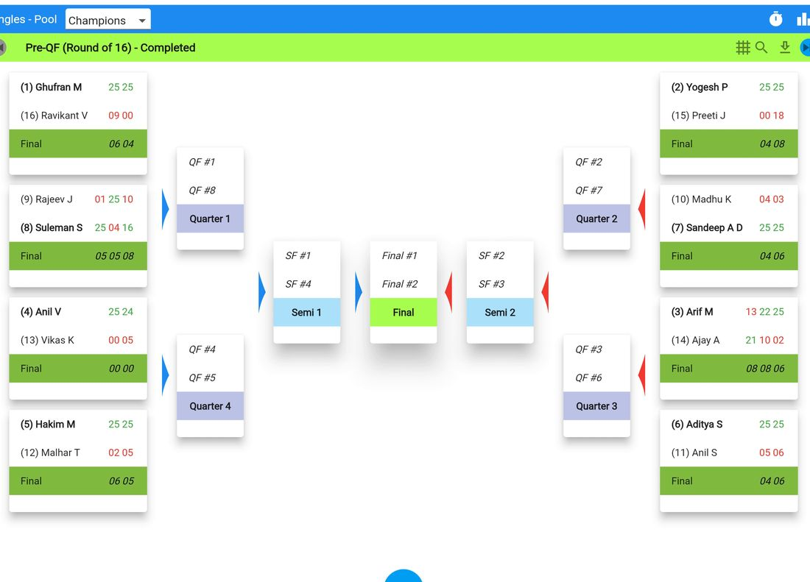
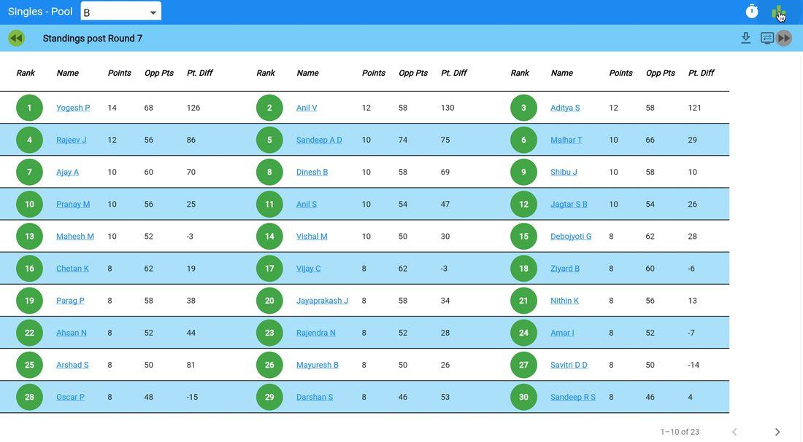
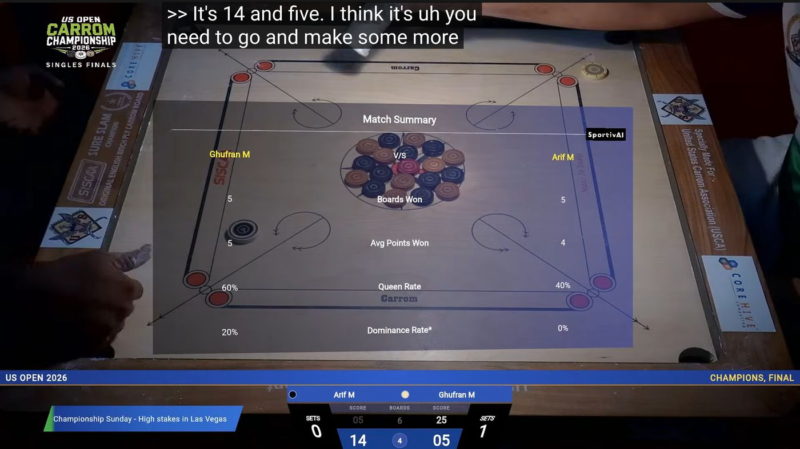
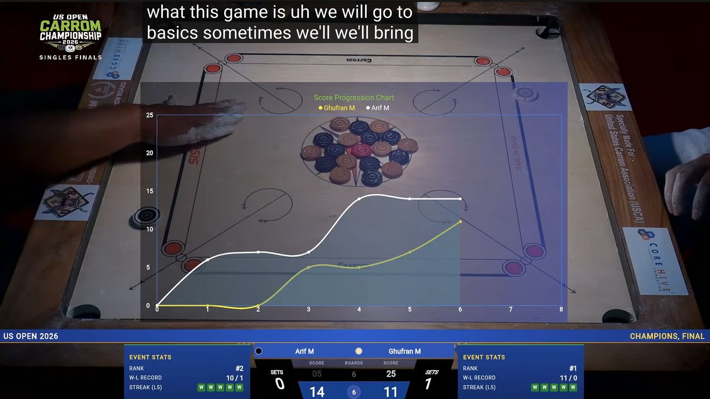
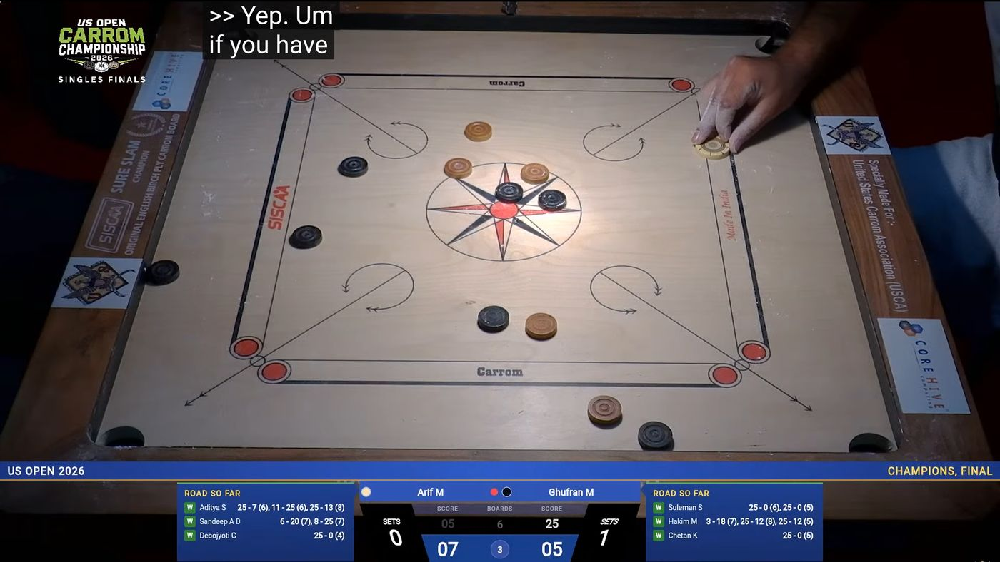
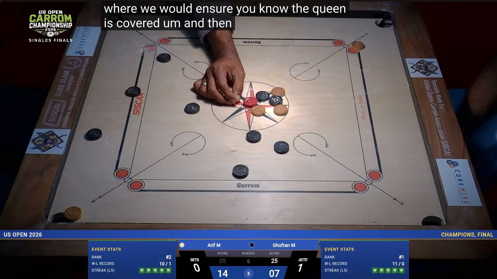
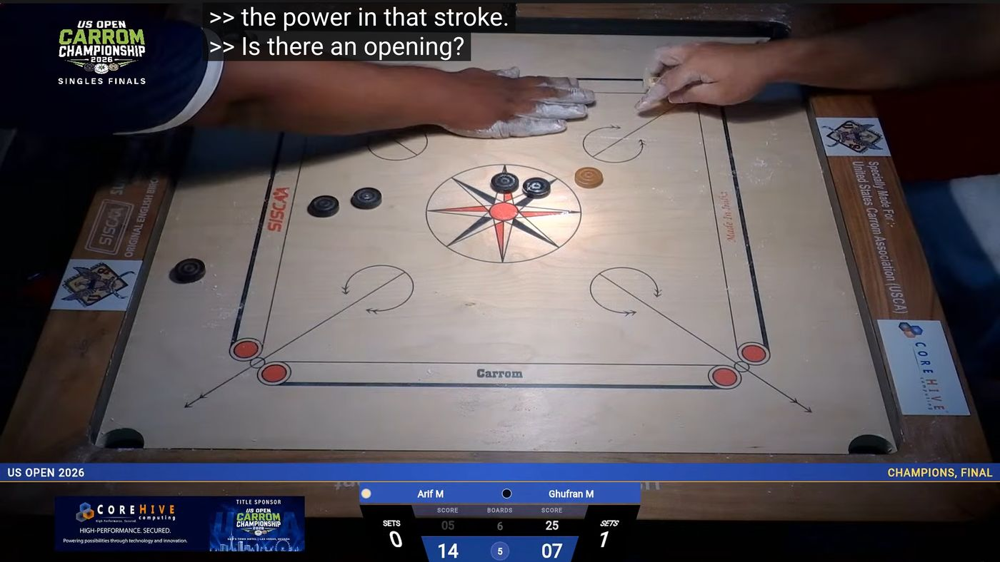
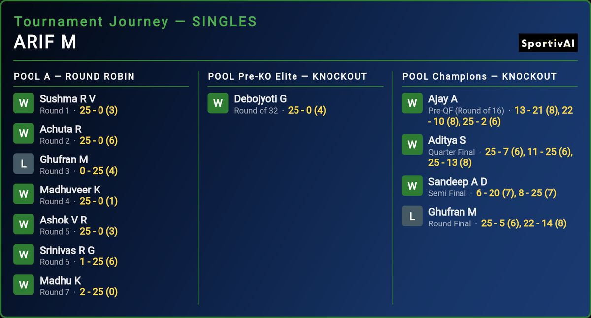

Summary
Most sports organizations still run on spreadsheets, group chats and volunteer heroics. That includes governing bodies, leagues, clubs and the grassroots tiers beneath fast-growing pro sports. SportivAI today announced the public launch of its multi-sport, white-label platform: one system that runs a sport's whole competitive life and turns every match into live, followable, broadcast-ready data.
The platform covers every step of a tournament: setup, online registration and payments, game-day pools and brackets, paperless live scoring, real-time fan followership, standings, rankings and broadcast overlays. Each organization gets it under its own name, logo and domain. Each sport plays by its own rules, from scoring to serve rotation to tie-breakers, and an organization turns a sport on by configuration, not code.
The reference customer is the United States Carrom Association (USCA). SportivAI has powered its national championships, the US Open and the 2024 Carrom World Cup, with every board of every match scored live and live scoring and analytics built into the broadcast.
SportivAI in 90 seconds. A 30-second cut is also available.
The Problem
Thousands of sports organizations run without real software, at every level: national governing bodies for community sports, regional clubs, new pro leagues building an amateur base, and racquet, paddle and table sports growing faster than their tools. Their "tech stack" is a social media group, a messaging thread and a form. Brackets are drawn by hand or pasted into a spreadsheet. Scores are texted to an admin, and rankings live in one volunteer's laptop.
The cost is more than inconvenience. Players never experience their sport as a serious, professionally run competition. Fans can't follow a match unless they're in the room. Without live data, nothing feeds a broadcast, a story or a sponsor. Off-the-shelf tournament software assumes one sport's data model, and custom software needs engineers that volunteer organizations don't have.
These organizations aren't small because their sports are small. They're small because the infrastructure that makes a sport visible has always been out of reach.
The Solution
SportivAI is one multi-tenant platform, on web and mobile, that any number of organizations and sports share. Each organization is a tenant with its own branding, domain, sports, chapters and features. Each sport is described once in a sport profile: its scoring style, game and match rules, serve rotation, sides, vocabulary, formats and standings tie-breakers. Every screen, from the score pad at the table to the fan's live scoreboard, follows the profile.
Supporting a new sport is a contained engineering step, done once. Turning on a supported sport for an organization is a setting.




Screens from the San Francisco Pickleball Open (PB Club) and the US Open Carrom Championship 2026.
Run the event
- Tournaments Singles, doubles and team formats. Pools, Swiss, round robin and knockouts, with seeding, registration windows, waiting lists and early-bird and member pricing.
- Registration & Payments Online sign-up with entry fees collected through PayPal, and the player roster built as people register.
- Game-Day Control One panel for the organizer: create rounds, assign venues, confirm seedings and go live.
- Clubs & Chapters Regional chapters and clubs host their own events, with their own logos, under the parent organization's brand.
Score and follow it live
- Sport-Specific Score PadsNEW Each sport gets its own pad: boards, coins and queen for carrom; rally scoring with serve tracking for pickleball, badminton, squash and racquetball.
- Live Followership Every match of every pool, live on fans' phones. Followers see a scoreboard built for the sport, with the points largest and the serving side marked.
- Rally Log & AuditNEW Every rally is recorded with who served and who won it. Mistakes are undone, not erased, so every result can be reviewed.
- Per-Sport StandingsNEW Each sport ranks by its own rules: points, head-to-head, point differential across all games, and strength of opposition, applied in one place.
Turn it into a story
- Broadcast Overlays Live scores, tickers, moment statistics, sponsor spots and celebrations, overlaid on the stream or the TV broadcast.
- Player Journeys & Analytics Each player's path through the event and every score against every opponent, ready for commentary and recaps.
- Rankings Methodology-driven national rankings fed by tournaments and pickup matches, with a draft → review → publish workflow.
- Pickup Matchups Games outside tournaments build a year-round competitive record.
Make it yours
- Your Brand, Your DomainNEW Your name, logo, colors and web address. One platform serves many organizations, each under its own domain.
- Sports by ConfigurationNEW Turn on the sports you run, each with its standard formats and rule presets (for example badminton to 21 or to 15, squash best of five or three).
- Content Hub Blogs, news, sponsor spotlights, event pages and policy documents, with no CMS expertise needed.
- Donations & Main Portal A donation portal and a public landing site with video gallery, highlights and links into every module.
On Air: Carrom, Powered by SportivAI
USCA shows the platform at full scale. Its national events run end to end on SportivAI, and their broadcasts carry the platform's live scores, analytics and historical records on screen. Every point captured at the table feeds the telecast in real time.






Frames from the US Open Carrom Championship 2026 broadcast.


What Our Customers Say
"SportivAI helped us accomplish something extraordinary: transform a traditional sport into a modern, data-driven sporting experience. Their technology powered everything from real-time tournament scoring and advanced analytics to professional TV broadcasting. The rich data ecosystem they built even opened doors to exploring entirely new commercial opportunities. SportivAI wasn't just supporting our growth — they were expanding what was possible for our sport."
— Bala Parthasarathy, Former President, USCA
"Imagine a tournament with thousands of matches, where fans can follow every single board of every single match in real time. Or a televised sporting event with live scoring and rich analytics seamlessly integrated into the broadcast. SportivAI made all of this possible for Carrom. Their technology didn't just digitize our sport — it fundamentally redefined the experience for organizers, players, and fans alike."
— Director of Broadcasting, USCA
"Our vision was to take Carrom from a traditional, grassroots sport to the global stage, powered by cutting-edge technology. SportivAI turned that vision into reality. Their platform transformed tournament operations, empowered players and fans with unprecedented real-time insights, and enabled broadcast-quality experiences for major sports networks. Their contributions were instrumental in the remarkable growth of American Carrom, culminating in the 2024 Carrom World Cup."
— Secretary, USCA
"I really enjoyed watching the matches live this time! It was fantastic hearing the commentary from my carom friends throughout the broadcast, didn't feel like missed the tournament.
What stood out to me most was the player statistics and tournament tracking. Showing the players' journey throughout the tournament—along with their scores against each opponent since the start—was insightful and added a lot of value to the stream. You guys did a fantastic job this time. Keep up the great work!"
— Follower, US Open Championship 2026
"We built this because we live it. We're carrom players, carrom organizers, and we were the volunteers staying up until midnight updating tournament brackets in a spreadsheet. We knew exactly what needed to exist — and that every sport like ours needed it too."
— SportivAI Founders
Frequently Asked Questions
Who is this for?
Any organization that runs competitive play and has outgrown spreadsheets: national governing bodies, regional associations, club networks, event organizers, and the amateur and development tiers of growing pro leagues. The sweet spot is a community of hundreds to thousands of active players with regular tournaments and a small team doing the work of a professional operations staff.
Which sports does it support today?
Carrom, pickleball, badminton, squash and racquetball. Each is played by its most widely used rules, with standard presets (for example, badminton games to 21 or to 15, squash best of five or best of three, racquetball's tiebreaker to 11). Adding a sport with a familiar scoring style takes a short, contained engineering step. A sport with a new scoring style, such as innings or a game clock, adds that style once, and every later sport of that kind reuses it.
What does "white-label" mean in practice?
Your players see your name, your logo and your domain, and never see "SportivAI" unless you want them to. The organization is configured as a tenant: name, domain, sports, chapters, feature flags, media and social links. Every screen, document and hosted page reflects your brand. USCA runs at uscarrom.org, and every other organization runs at its own address.
Do we need engineers to run this?
No. Once onboarded, day-to-day operations run through the admin screens: creating tournaments, managing registrations, setting up rounds, scoring, publishing rankings and uploading content. Enabling another supported sport is a settings change. Initial setup of your domain and configuration is a one-time onboarding with the SportivAI team.
Can it power a broadcast?
Yes. USCA's US Open and 2024 Carrom World Cup broadcasts carried SportivAI's live scores, analytics, player journeys and historical records on screen. Because every point is captured as it happens, the same data that drives the fan app drives the overlay.
What happens to our data?
Each organization's data lives in its own isolated database, separate from every other tenant's. Organizations that want their own cloud project can choose a dedicated deployment, as USCA has.
Does it support mobile?
Yes. Everything works in the mobile browser, which is where fans follow and referees score. USCA's deployment also ships iOS and Android apps. Native apps are available to other organizations as their needs grow.
What does a new organization get on day one?
A live, branded web app at its own address, admin accounts, its chosen sports switched on, its chapters set up, and every module ready: tournaments, live scoring, followership, rankings and content. The organization can create its first tournament the same day.
Is there AI in SportivAI?
AI is in SportivAI from the ground up. SportivAI was born in the AI age and is built with AI end to end: AI helps design, write, test and deploy the platform. That is how a small team keeps shipping new sports, screens and fixes at the pace of a much larger one.
For customers, the AI in SportivAI is a layer cake. Each layer stands on the one beneath it, and the top layer is the destination: tournaments that run themselves and react on their own.
- DestinationAutonomousEvents that run and react on their own. Schedules re-plan around delays, venues rebalance, and organizers are alerted only when a person is needed.
- NextAssistiveRecommendations organizers accept with one click: seeding, pools and schedules, scoring anomalies flagged as they happen, and recaps and player stories written automatically.
- Live todayInsightAnalytics that tell the story as it happens: player journeys, momentum charts, match summaries and head-to-head records, on fans' phones and on the broadcast.
- Live todayFoundation: live dataEvery match, point, rally, serve and ranking movement, captured as it happens and kept as the sport's competitive history.
Every layer is built on real data from real events, so each step up the cake comes from evidence, not guesswork.
Ready to give your sport a big-league experience?
Any sport. Any association. Live.